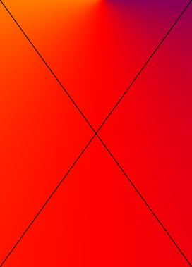

Современная экономика динамична и подвижна: она предполагает постоянные изменения, позволяющие учитывать менющиеся условия жизни и текущие требования рынка, и, именно, это привело к появлению одного из быстро развивающихся и испиользуемых экономических ресурсов - платежных средств нового формата, таких как, цифровые деньги. Эта технологоия подобна реальных наличным деньгам и позволяет оплачивать товары и услуги в виртуальной экономике, передавая информацию от одного компьютера другому.
Современная экономика динамична и подвижна: она предполагает постоянные изменения, позволяющие учитывать менющиеся условия жизни и текущие требования рынка, и, именно, это привело к появлению одного из быстро развивающихся и испиользуемых экономических ресурсов - платежных средств нового формата, таких как, цифровые деньги. Эта технологоия подобна реальных наличным деньгам и позволяет оплачивать товары и услуги в виртуальной экономике, передавая информацию от одного компьютера другому.
Подробнее о фонде